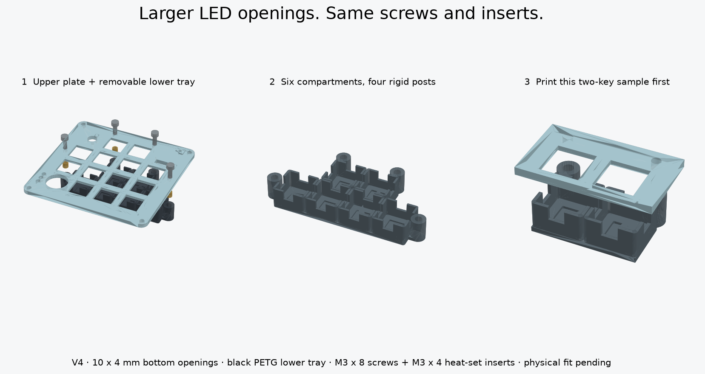

Two plates.
One removable lighting layer.
The upper plate holds the switches. The lower tray contains six light compartments and four rigid screw posts. Your existing M3 × 8 mm screws thread into brass heat-set inserts in the tops of the posts. No flexible clips or glue hold the tray.
Each bottom opening now matches the original individual baffle's size, enlarged from 6 × 2.2 mm. The upper plate, LED seats, screw posts and heat-set hardware stay the same. Reuse your existing two-layer upper plate or upper sample; only the lower piece needs this update.
With USB disconnected and the upper plate removed, feed the LED edge-first through the opening, move it inward, then turn it flat into its seat. Try your already-soldered LED on the small sample without forcing it. The nominal LED body clears in CAD; actual solder and wire bends still need a fit check. The LED will not pass through flat.
This is a new CAD design, not a physically verified fit. The sample uses the same switch openings, cups, posts and screw spacing as the full design.
1. Upper sample STL ↓2. Lower sample STL — 10 × 4 mm ↓Test the wired LED through the opening before installing inserts. Use two switches, two keycaps, two LEDs and two M3 × 8 screws and two M3 × 4 heat-set inserts to test. Do not print the full plates until this and your joystick test fit pass.
See how the layers fit
Drag to rotate; scroll to zoom. Move the slider to separate the layers. Click a part to identify it.
Loading CAD…
Blue: upper plate · dark gray: lower baffle tray · black: existing screws · gold: heat-set inserts.
Actual exported CAD geometry. Electronics and wires are omitted here for clarity. The slider illustrates separation; inserts are installed permanently in the lower tray. Support the tray when undoing its screws from above.

What changes?
- New upper plate: unchanged from baffle-tray-v2. Reuse its upper sample or full upper plate if you already printed it. Older plates without the four tray holes are different.
- Updated lower tray: six 10 × 4 mm access openings. The four posts and their blind heat-set pilots are unchanged from v3.
- Existing case: retained. Do not drill your old top plate freehand; print the matching candidate plate after testing.
- Four visible screw heads: at the outer edges of the key area. They sit above the top surface rather than in countersinks.
Use your existing hardware
| Part | Sample / full tray | Your part |
|---|---|---|
| M3 × 8 mm socket-head screws | 2 / 4 | McMaster 91290A113 ↗ |
| M3 × 4 mm brass heat-set inserts, 4.2 mm outside diameter | 2 / 4 | Adafruit 4255 ↗ |
Use spare pieces from your existing packs. The sample screws can be reused; its two embedded inserts stay in the sample. The full keyboard uses ten inserts (four case, two foot, four tray), plus two for this test. No new hardware type, M3 × 20 screws or loose tray nuts are required. Keep the original case fasteners in place.
Use a 2.5 mm hex key and a suitable heat-set installation tip on your soldering iron. Exact insertion temperature depends on the filament and tool. Adafruit recommends an insert tip to keep the insert straight. Confirm the screws measure 8 mm under the head, and your inserts match the listed dimensions before heating.
Print settings
- Lower tray: black PETG. An opaque material helps block light. Bottom flat on bed, compartments up, supports off.
- Upper sample: white or clear PETG. Supplied visible-face-down orientation; switch retaining recesses face up, supports off.
- Both samples: 100% scale, 0.4 mm nozzle, 0.15 mm layers, four walls, 100% infill. Inspect thin walls and complete screw-hole paths in the slicer.
- Full upper plate is oriented differently: underside on the bed, raised joystick seats up. Review the shallow underside switch recesses; local support may be needed depending on your printer. Avoid filling holes with support.
Try the small sample
- Disconnect USB and leave electronics out. Print one lower sample; reuse the v2 upper sample or print the included upper STL. Clear strings. The upper holes should freely pass an M3 screw.
- Test the larger opening first. With the upper sample off, feed your wired LED edge-first through the 10 × 4 mm slot, then move it inward and turn it flat. Stop if its solder or wires catch; do not pull them through by force. Remove the LED again before heating the inserts.
- Install two inserts in the lower sample. Set the tray flat, cups up. The larger holes in the tops of the two posts are 3.9 mm starting pilots. Place an insert over each pilot and use a suitable heated insertion tip to press it straight down, slowly, until its top is flush with the post. Let the heat soften the plastic; do not force a cold insert in. Stop if the post distorts or the insert tilts.
- Let both inserts cool fully. Do not insert a screw while the brass is hot. Check that the insert is flush, straight and does not spin. Its grip in your actual PETG is the main new fit test.
- Join the empty layers. Cup openings face the underside of the upper sample. Insert two existing M3 × 8 mm screws from above and finger-start them into the inserts. Tighten gently until seated; no wrench or loose nut is needed underneath. Stop if a screw binds or an insert rotates.
- Check real switches and keycaps. Both switches should latch from above and move freely. The tray should not rock. Undo the screws while supporting the tray and lower it to expose the solder pins.
- Dry-fit the LEDs with the upper plate removed. Feed them edge-first through the openings before attaching the upper plate again. Pockets locate the LED boards but do not clamp them. Use one layer of 3M 9474LE mounting tape underneath (0.17 mm excluding liners), within the 0.2 mm adhesive allowance. Dry-fit and test the light before sticking it down; the adhesive forms a strong permanent bond. Keep rear pads clear of other metal and leave wire openings clear. Keep light-emitting faces clear. The modeled gap between LED top and switch-pin envelope is 0.8 mm; actual solder and insulation must also clear.
- Leave wire slack. LED leads pass through floor slots and switch/diode leads through upper wall notches. Allow the tray to lower about 20 mm without pulling a solder joint. After checking the electrical connections, test one light for leakage before wiring all six.
Send a side photo with the layers joined and tell me whether the inserts sit flush, the screws tighten gently, and the tray stays steady. Do not print the full lower tray until the sample passes. Heat-set pullout strength, repeated use and light isolation remain unverified.
Full-size files — wait for the sample
These two parts form the finished pair. The upper plate is unchanged from v2; only the lower tray needs replacement if you want the larger openings and already printed v2 or v3. The full tray is stepped around the six lit keys so it leaves room for the encoder, joystick and other wiring.
Upper plate STL — WAIT · Upper STEP
Lower tray STL — 10 × 4 mm — WAIT · Lower STEP
Complete CAD/source kit · Assembly STEP — view only · CAD checks · Technical notes
A nominal, unwired LED body clears the edge-first insertion and rotation path with the upper plate removed. Collision checks cover the modeled case, installed inserts, screw engagement, switch/pin and electronics envelopes. They do not prove real-world fit, printer tolerances, wiring access, optical performance or lifetime. The main site's older full-keyboard animation still shows individual adhesive cups.